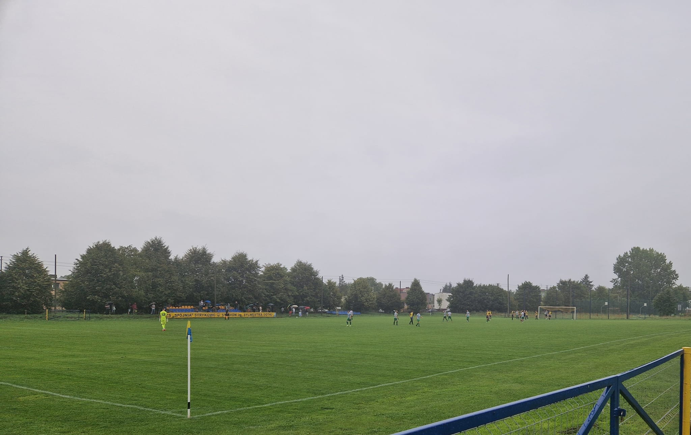

Strykowo Poznańskie to urokliwa miejscowość położona w województwie wielkopolskim, znana z pięknych terenów rekreacyjnych, jeziora oraz zabytków takich jak zamek von Treskow. Miejsce to przyciąga zarówno turystów, jak i osoby szukające wypoczynku blisko natury. W okolicy znajduje się również przystanek kolejowy, szkoła oraz obiekty sportowe i kulturalne.
Jezioro Strykowskie
Jezioro Strykowskie to malowniczy akwen położony na Pojezierzu Poznańskim. Charakteryzuje się wydłużonym kształtem i rozwiniętą linią brzegową. Jest popularnym miejscem wypoczynku, oferującym możliwości kąpieli, wędkowania oraz uprawiania sportów wodnych. Na południowym brzegu znajduje się plaża z infrastrukturą turystyczną, skąd roztacza się widok na neogotycki pałac z 1900 roku. Źródło
Dworzec Kolejowy w Strykowie
Dworzec kolejowy Strykowo Poznańskie to ważny punkt komunikacyjny, łączący miejscowość z większymi miastami regionu. Budynek dworca, choć niewielki, pełni istotną rolę w codziennym życiu mieszkańców, umożliwiając wygodne podróże koleją. Źródło
Zamek von Treskow
Zamek von Treskow, znany również jako pałac w Strykowie, został wzniesiony w 1900 roku dla rodu von Treskow. Charakteryzuje się neogotycką architekturą z elementami secesyjnymi. Obecnie mieści się tu restauracja oraz organizowane są różnego rodzaju imprezy okolicznościowe. Źródło
Boisko sportowe

Boisko sportowe w Strykowie to nowoczesny obiekt służący zarówno mieszkańcom, jak i drużynom sportowym. Odbywają się tu mecze lokalnych zespołów, treningi oraz wydarzenia sportowe dla dzieci i młodzieży.
Pociąg „Piękna Helena”
Pociąg parowy „Piękna Helena” to zabytkowa lokomotywa Pm 36-2, która regularnie pojawia się na trasach turystycznych przez Strykowo. Przejazdy tym pociągiem są atrakcją dla całych rodzin i miłośników kolejnictwa. Towarzyszy im wyjątkowy klimat i możliwość zobaczenia malowniczych okolic z pokładu zabytkowego składu.
Spójnia Strykowo
Spójnia Strykowo to lokalny klub piłkarski z siedzibą w Strykowie, który odgrywa istotną rolę w życiu sportowym społeczności. Drużyna seniorów rywalizuje w klasie A, grupie wielkopolskiej V. W sezonie 2024/2025 zespół zajął 7. miejsce w tabeli, zdobywając 23 punkty w 13 meczach (7 zwycięstw, 2 remisy, 4 porażki) z bilansem bramkowym 36:20. Źródło
Klub mieści się przy ulicy Bukowskiej 2 w Strykowie. Więcej informacji, w tym aktualności, terminarz meczów oraz dane kontaktowe, można znaleźć na oficjalnej stronie klubu: spojniastrykowo.futbolowo.pl